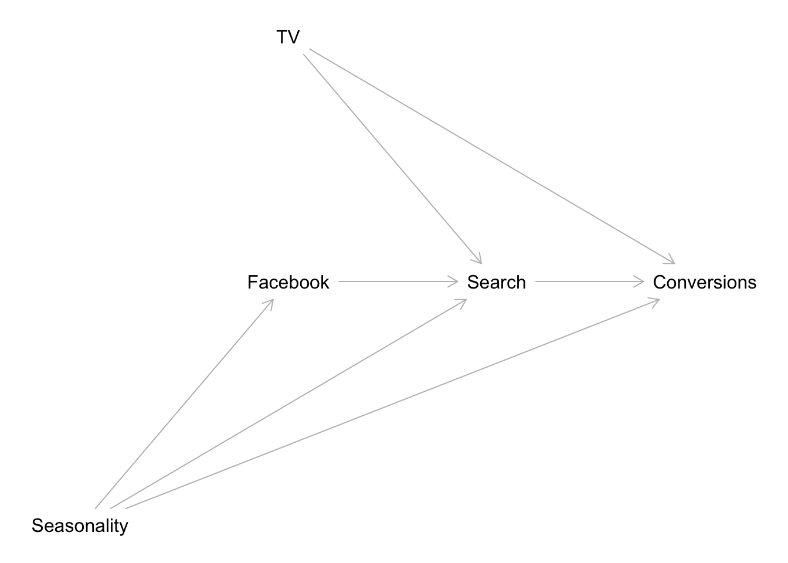

In this notebook we present a concrete example of estimating the media effects via bayesian methods, following the strategy outlined in Google’s paper Jin, Yuxue, et al. “Bayesian methods for media mix modeling with carryover and shape effects.” (2017). This example can be considered the continuation of the post Media Effect Estimation with Orbit’s KTR Model. However, it is not strictly necessary to read before as we make this notebook self-contained. In addition, we provide some remarks and references regarding MMM projects in practice.
Data Generation Process
In Part I of the post Media Effect Estimation with Orbit’s KTR Model, we generated a synthetic dataset where we modeled a target variable y (sales) as a function of a trend, a seasonal component and an external regressor z (media spend). The effect of z on y was specified by the composition two transformations: a carryover effect (adstock) and a shape (saturation) effect.These two transformations have proven successful in practical Media Mix Modeling.
- The (geometric) adstock transformation is parametrized by the decaying parameter \(\alpha\) and the carryover parameter \(\ell\). For this specific dataset, we set \(\alpha = 0.5\) and \(\ell =12\).
- The saturation effect is parametrized by the shape parameter \(\lambda\). In this example we set \(\lambda=0.15\).
In the previous post (where we used the greek letter \(\mu\) for the shape parameter), we transformed the variable z as:
\[ z \xrightarrow{\text{adstock}(\alpha)} z_{\text{adstock}} \xrightarrow{\text{saturation}(\lambda)} z_{\text{effect}} \]
and generated y as:
\[ y(t) = \beta_{0} + \beta_{\text{trend}}\:\text{trend} + \beta_{\text{seasonality}}\:\text{seasonality} + \beta_{z}(t)\:z_{\text{effect}} + \varepsilon \]
where the beta coefficient \(\beta_{z}(t)\) was a (smooth) decaying function encoding the diminishing returns over time.
Prophet and KTR Models
In the previous post the Media Effect Estimation with Orbit’s KTR Model we fitted two models:
Prophet: Given the strong seasonal patter nof the time series, we used a Prophet model as a baseline. This model was able to successfully capture the trend ans seasonal components. On the other hand, the estimated regression coefficients \(\widehat{\beta}_{z}(t)=\widehat{\beta}_{\text{Prophet}}\) was a constant (i.e. constant over time, as expected) very close to the median of \(z_{\text{effect}}\).
KTR (Kernel-based Time-varying Regression): The second model we used was Orbit’s KTR model, on which regression coefficients are allowed to vary over time by using kernel smooths (see Edwin, Ng, et al. “Bayesian Time Varying Coefficient Model with Applications to Marketing Mix Modeling” for more details). For this example, the model has able to give a good approximation \(\widehat{\beta}_{z}(t)=\widehat{\beta}_{\text{KTR}}\) to the true \(\beta_{z}(t)\) coefficient.
It is important to emphasize that both models where fitted using z_adstock as the external regressor. That is, we assumed the value of alpha was given as it is not straight forward to estimate it using the models above.
PyMC Model
Motivated by the results above, we now want to build a bayesian model to estimate \(\alpha\), \(\lambda\) and \(\beta_z(t)\) simultaneously (as well as the other regression coefficients for the trend and seasonality). We will use the PyMC3 motivated by the following great resources:
- Simulated Example by Dr. Robert Kübler:
- An Upgraded Marketing Mix Modeling in Python
- Bayesian Marketing Mix Modeling in Python via PyMC3
- Rockin‘ Rolling Regression in Python via PyMC3
- HelloFresh’s Media Mix Model: Bayesian Marketing Mix Modeling in Python via PyMC3. Here are some additional references for this use cases:
- Article: Bayesian Media Mix Modeling using PyMC3, for Fun and Profit
- Video: A Bayesian Approach to Media Mix Modeling by Michael Johns & Zhenyu Wang
- Articles by PyMC Labs:
Of course, the main motivation is Google’s paper Jin, Yuxue, et al. “Bayesian methods for media mix modeling with carryover and shape effects” (2017). Moreover, for a discussion of MMM in practice please see Chan, David, et al. “Challenges and Opportunities in Media Mix Modeling” (2017)
As usual in applied data analysis, we will start from simple models and iterate to add more complexity. Moreover, we will follow the recommended bayesian workflow.
Some Additional Remarks on MMM in Practice
MMM Projects
There are many existing projects regarding media mix models. Two of the most known ones are
- Facebook’s Robyn: This model uses a combination of Prophet (trend-seasonality model) and a ridge regression to model media data.
- Google’s LightweightMMM: This project in essence follows the approach we describe in this post. The code is written in Numpyro.
Which Media Data to Use?
In this simulated example we are using media spend as regressor for the media variable. Nevertheless, in practice this is not the best choice as described in the Analysts guide to MMM from Facebook’s Robyn documentation:
Data collected for media ideally should reflect how many “eyeballs” have seen or been exposed to the media (e.g. impressions, GRPs). Spends should also be collected in order to calculate Return On Investment, however it is best practice to use exposure metrics as direct inputs into the model, as this is a better representation than spends of how media activity has been consumed by consumers.
So, if we use impressions in the model, how to include the cost data? There are various alternatives. For example:
Facebook’s Robyn: Includes the costs data as part of the model selection. They train many models and the user has to select the best among two metrics: model fit (NRMSE) and the predicted cost distribution (DECOMP.RSSD), see here for details.
Googles’s LightweightMMM: Their approach is fully-bayesian so they include the cost data as part of the prior distributions of the model.
Remark: In practice, I have used Googles’s LightweightMMM approach to include costs as part of the priors with PyMC models as the one presented in this post. The results are quite good and personally I like it more that the manual-model selection approach.
Controling for Seasonality and other Factors: Causal Graph
As Richard McElreath would say (paraphrasing from his amazing lectures!) “Do not try to be clever, build a causal graph model!” Indeed, it is not worth trying to add all control variables to the media mix models and hope to solve all confounding effects. A much better approach (strongly recommended!) is to build a causal graph. For more details about this approach I recommend Statistical Rethinking by Richard McElreath (and the corresponding YouTube videos). Once we have a causal model, we can actually use software (for example dagitty: Graphical Analysis of Structural Causal Models in R) to help us with the regression model structure. For example, let’s consider a simple causal graph:
library(dagitty)
dag <- dagitty( x = "dag {
TV -> Search -> Conversions
TV -> Facebook -> Conversions
TV -> Conversions
Radio -> Search -> Conversions
Radio -> Facebook -> Conversions
Radio -> Conversions
Seasonality -> Conversions
Seasonality -> Search
Seasonality -> Facebook
}" )
coordinates( x = dag ) <- list(
x = c(
"Seasonality" = 0,
"TV" = 0,
"Radio" = 0,
"Search" = 1,
"Facebook" = 1,
"Conversions" = 2
),
y = c(
"Seasonality" = 1,
"TV" = -1,
"Radio" = 0,
"Search" = 1,
"Facebook" = -1,
"Conversions" = 0
)
)
plot( dag )
We would like to estimate the effect of TV on Conversions. To begin, we can get the list of conditional independence statements that must hold in every probability distribution compatible with the given model.
impliedConditionalIndependencies( x = dag )## Fcbk _||_ Srch | Radi, Ssnl, TV
## Radi _||_ Ssnl
## Radi _||_ TV
## Ssnl _||_ TVWe can use the data to test these implications. Next, we can get the sets of covariates that (asymptotically) allow unbiased estimation of causal effects from observational data, assuming that the input causal graph is correct (by looking into the back-door criterion). For example to estimate the direct effect of TV on Conversions we run:
adjustmentSets( x = dag , exposure = "TV", outcome = "Conversions" )## {}This shows that the regression model structure should be
Conversions ~ Intercept + TV.
On the other hand, if we want the effect of Facebook to Conversions we run:
adjustmentSets( x = dag , exposure = "Facebook", outcome = "Conversions" )## { Radio, Seasonality, TV }Hence, the correct model (given the graph causal model!) is
Conversions ~ Intercept + Facebook + TV + Radio + Seasonality
Again, no need to be clever, just specify the causal model. One could argue that for digital channels (like Facebook) the impressions data is already driven by seasonality, so adding additional Fourier modes can be counterproductive. However, given a causal graph as above this is actually not the case. One can extend this type of analysis for additional external factors to be consider in the media mix model.
Remark: There are of course other strategies to model seasonality. Certain modelers suggest to add time-variant coefficients to encode seasonality via Gaussian processes (see for example the post You’re probably modeling seasonality the wrong way).
Remark: To estimate the cost of incremental sales by considering the funnels effects (causal graph) please refer to the excellent blog post Bayesian Media Mix Modeling using PyMC3, for Fun and Profit
For more examples and details about good and bad controls you can look into the article A Crash Course in Good and Bad Controls.
Adstock and Saturation Order
Note that the adstock and saturation transformations do not commute (i.e. the order matters). So which one to apply first? I recommend you look into Section 2.3 Combining the Carryover and the Shape Effect in Jin, Yuxue, et al. “Bayesian methods for media mix modeling with carryover and shape effects.” (2017). The rule of thumb is to apply:
- Adstock transformation first if: the media spend in each time period is relatively small compared to the cumulative spend across multiple time periods.
- Saturation transformation first if: the media spend is heavily concentrated in some single time periods with an on-and-off pattern.
It is All about the Data
As any other data science project the data is the key factor of the success of an MMM project. As the main idea of an MMM is to estimate effects across many digital and offline channels, the data collection can be challenging (it usually is). Hence, the recommendation is to spend a significant par of the project collecting and understanding the data: Where is the data coming from? How is it transformed and stored? Outliers? Missing values?
Remark: The Analysts guide to MMM from Facebook’s Robyn gives nice tips about planing and executing an MMM project (steps, data collection, timeline, etc.).
Prepare Notebook
import aesara.tensor as at
import arviz as az
import matplotlib.pyplot as plt
import numpy as np
import pandas as pd
import pymc as pm
import pymc.sampling_jax
import seaborn as sns
from scipy.stats import pearsonr
from sklearn.preprocessing import MinMaxScaler
plt.style.use("bmh")
plt.rcParams["figure.figsize"] = [10, 6]
plt.rcParams["figure.dpi"] = 100
%load_ext rich
%load_ext autoreload
%autoreload 2
%config InlineBackend.figure_format = "retina"/Users/juanitorduz/.local/share/virtualenvs/website_projects-1IZj_WTw/lib/python3.9/site-packages/pymc/sampling_jax.py:36: UserWarning: This module is experimental.
warnings.warn("This module is experimental.")Read Data
We start by reading the data. This csv was generated in the post Media Effect Estimation with Orbit’s KTR Model, please refer to it for details. Here we give a quick overview of the data.
data_df = pd.read_csv("../Data/ktr_data.csv", parse_dates=["date"])
data_df.info()<class 'pandas.core.frame.DataFrame'>
RangeIndex: 179 entries, 0 to 178
Data columns (total 20 columns):
# Column Non-Null Count Dtype
--- ------ -------------- -----
0 index 179 non-null int64
1 date 179 non-null datetime64[ns]
2 year 179 non-null int64
3 month 179 non-null int64
4 dayofyear 179 non-null int64
5 z 179 non-null float64
6 z_adstock 179 non-null float64
7 z_adstock_saturated 179 non-null float64
8 beta 179 non-null float64
9 z_effect 179 non-null float64
10 effect_ratio 179 non-null float64
11 effect_ratio_smooth 179 non-null float64
12 trend 179 non-null float64
13 cs 179 non-null float64
14 cc 179 non-null float64
15 seasonality 179 non-null float64
16 intercept 179 non-null float64
17 trend_plus_intercept 179 non-null float64
18 epsilon 179 non-null float64
19 y 179 non-null float64
dtypes: datetime64[ns](1), float64(15), int64(4)
memory usage: 28.1 KBLet us now plot the most relevant variables for the analysis:
fig, ax = plt.subplots(
nrows=3,
ncols=1,
figsize=(12, 9),
sharex=True,
sharey=False,
layout="constrained"
)
sns.lineplot(x="date", y="y", color="black", data=data_df, ax=ax[0])
ax[0].set(title="Sales (Target Variable)")
sns.lineplot(x="date", y="z_effect", color="C3", data=data_df, ax=ax[1])
ax[1].set(title="Media Cost Effect on Sales")
sns.lineplot(x="date", y="z", data=data_df, ax=ax[2])
ax[2].set(title="Raw Media Cost Data");- The first plot is our target variable
y, which can represent sales data, for example. - the second plot is the
z_effectvariable, which is the simulated effect of the media spent variablezon the variabley. In practice we do not knowz_effect. We would like to infer it from the data! - The last plot represent the input data
zwhich is something we have control of.
Note that the variable y has a trend and strong (additive) yearly seasonality components.
Features
We of course do not want to use the trend os seasonal components from the data_df dataframe, as the whole point id to learn them tom the data. Hence, let us keep the variables we would actually have in when developing the model.
columns_to_keep = ["index", "date", "year", "month", "dayofyear", "z", "y"]
df = data_df[columns_to_keep].copy()Next, we generate input features to model the trend and seasonal components. We follow the strategy presented in the very compprehensive post Air passengers - Prophet-like model from the pymc-examples repository (please check it out!).
Trend
For the trend component we simply use a linear feature (which we scale between \(0\) and \(1\)).
t = (df.index - df.index.min()) / (df.index.max() - df.index.min())Seasonality
To model the seasonality, we use Fourier modes (similarly as in Prophet or Orbit).
n_order = 7
periods = df["dayofyear"] / 365.25
fourier_features = pd.DataFrame(
{
f"{func}_order_{order}": getattr(np, func)(2 * np.pi * periods * order)
for order in range(1, n_order + 1)
for func in ("sin", "cos")
}
)We can see how these cyclic features look like:
fig, ax = plt.subplots(nrows=2, sharex=True, layout="constrained")
fourier_features.filter(like="sin").plot(color="C0", alpha=0.15, ax=ax[0])
ax[0].get_legend().remove()
ax[0].set(title="Fourier Modes (Sin)", xlabel="index (week)")
fourier_features.filter(like="cos").plot(color="C1", alpha=0.15, ax=ax[1])
ax[1].get_legend().remove()
ax[1].set(title="Fourier Modes (Cos)", xlabel="index (week)");Finally, we extract the target and features asn numpy arrays.
date = df["date"].to_numpy()
date_index = df.index
y = df["y"].to_numpy()
z = df["z"].to_numpy()
t = t.values
n_obs = y.sizeendog_scaler = MinMaxScaler()
endog_scaler.fit(y.reshape(-1, 1))
y_scaled = endog_scaler.transform(y.reshape(-1, 1)).flatten()
channel_scaler = MinMaxScaler()
channel_scaler.fit(z.reshape(-1, 1))
z_scaled = channel_scaler.transform(z.reshape(-1, 1)).flatten()Models
In this section we fit \(3\) models, from simpler to complex:
1. Base Model: We fit a linear regression model with a single regressor z and controlling from trend ans seasonality.
Adstock-Saturation Model: We use the same model structure as the base model but we now apply the (geometric) adstock and saturation transformations to the
zvariable. We do not se a variable for \(\alpha\) and \(\lambda\) as we learn them from the data. We do fix the variable \(\ell=12\) of the adstock transformation.Adstock-Saturation-Diminishing Returns Model: We use the same model structure as the Adstock-Saturation model but we allow a time-varying coefficient for (the transformed)
zby modeling it as a gaussian random walk.
Here are some comments on the models:
- We use a
pm.HalfNormaldistribution for the media coefficients to ensure they are positive. - We use a
pm.Laplacedistribution fot the fourier coefficient to add certain regularization (these features can easily lead to an overfit). - For the likelihood function we use a
pm.StudentTdistribution which is most robust against outliers. - We scale both the target variable
yand the channel inputzusing aMinMaxScaler. During the whole analysis we carefully study the effect of these scalers and describe how to recover back the predictions and effects in the original scale.
Base Model
Let us start by defining the structure of the base model, which is the be the core of the models to come.
- Model Specification
coords = {"date": date, "fourier_mode": np.arange(2 * n_order)}
with pm.Model(check_bounds=False, coords=coords) as base_model:
# --- priors ---
## intercept
a = pm.Normal(name="a", mu=0, sigma=4)
## trend
b_trend = pm.Normal(name="b_trend", mu=0, sigma=2)
## seasonality
b_fourier = pm.Laplace(name="b_fourier", mu=0, b=2, dims="fourier_mode")
## regressor
b_z = pm.HalfNormal(name="b_z", sigma=2)
## standard deviation of the normal likelihood
sigma = pm.HalfNormal(name="sigma", sigma=0.5)
# degrees of freedom of the t distribution
nu = pm.Gamma(name="nu", alpha=25, beta=2)
# --- model parametrization ---
trend = pm.Deterministic(name="trend", var=a + b_trend * t, dims="date")
seasonality = pm.Deterministic(
name="seasonality", var=pm.math.dot(fourier_features, b_fourier), dims="date"
)
z_effect = pm.Deterministic(name="z_effect", var=b_z * z_scaled, dims="date")
mu = pm.Deterministic(name="mu", var=trend + seasonality + z_effect, dims="date")
# --- likelihood ---
pm.StudentT(name="likelihood", nu=nu, mu=mu, sigma=sigma, observed=y_scaled, dims="date")
# --- prior samples ---
base_model_prior_predictive = pm.sample_prior_predictive()
pm.model_to_graphviz(model=base_model)- Prior Predictive Samples
Let us start by sampling from the model before looking into the data:
# useful way to color the distribution
palette = "viridis_r"
cmap = plt.get_cmap(palette)
percs = np.linspace(51, 99, 100)
colors = (percs - np.min(percs)) / (np.max(percs) - np.min(percs))
fig, ax = plt.subplots()
for i, p in enumerate(percs[::-1]):
upper = np.percentile(base_model_prior_predictive.prior_predictive["likelihood"], p, axis=1)
lower = np.percentile(
base_model_prior_predictive.prior_predictive["likelihood"], 100 - p, axis=1
)
color_val = colors[i]
ax.fill_between(
x=date,
y1=upper.flatten(),
y2=lower.flatten(),
color=cmap(color_val),
alpha=0.1,
)
sns.lineplot(x=date, y=y_scaled, color="black", label="target (scaled)", ax=ax)
ax.legend()
ax.set(title="Base Model - Prior Predictive Samples");The priors do constrain the range of the generated time series. Nevertheless, they are not too restrictive.
Remark: Note that the prior predictive shows the possibility of having negative sales which makes no sense. A common approach is to model the logarithm of the sales instead. We do not do this here for the sake of simplicity (specially when interpreting the results).
- Fit Model
with base_model:
base_model_trace = pm.sampling_jax.sample_numpyro_nuts(
draws=6000,
chains=4,
)
base_model_posterior_predictive = pm.sample_posterior_predictive(
trace=base_model_trace
)- Model Diagnostics
az.summary(
data=base_model_trace,
var_names=["a", "b_trend", "b_z", "sigma", "nu"],
)| mean | sd | hdi_3% | hdi_97% | mcse_mean | mcse_sd | ess_bulk | ess_tail | r_hat | |
|---|---|---|---|---|---|---|---|---|---|
| a | 0.337 | 0.010 | 0.319 | 0.356 | 0.000 | 0.000 | 21257.0 | 19230.0 | 1.0 |
| b_trend | 0.370 | 0.014 | 0.344 | 0.398 | 0.000 | 0.000 | 27709.0 | 18546.0 | 1.0 |
| b_z | 0.153 | 0.012 | 0.131 | 0.176 | 0.000 | 0.000 | 26931.0 | 18156.0 | 1.0 |
| sigma | 0.049 | 0.003 | 0.044 | 0.055 | 0.000 | 0.000 | 33140.0 | 18299.0 | 1.0 |
| nu | 12.497 | 2.412 | 8.018 | 17.018 | 0.012 | 0.009 | 37170.0 | 17905.0 | 1.0 |
axes = az.plot_trace(
data=base_model_trace,
var_names=["a", "b_trend", "b_fourier", "b_z", "sigma", "nu"],
compact=True,
backend_kwargs={
"figsize": (12, 9),
"layout": "constrained"
},
)
fig = axes[0][0].get_figure()
fig.suptitle("Base Model - Trace");fig, ax = plt.subplots(figsize=(6, 4))
az.plot_forest(
data=base_model_trace,
var_names=["a", "b_trend", "b_z", "sigma"],
combined=True,
ax=ax
)
ax.set(
title="Base Model: 94.0% HDI",
xscale="log"
);Overall, the model looks ok!
- Posterior Predictive Samples
posterior_predictive_likelihood = base_model_posterior_predictive.posterior_predictive[
"likelihood"
].stack(sample=("chain", "draw"))
posterior_predictive_likelihood_inv = endog_scaler.inverse_transform(
X=posterior_predictive_likelihood
)
fig, ax = plt.subplots()
for i, p in enumerate(percs[::-1]):
upper = np.percentile(posterior_predictive_likelihood_inv, p, axis=1)
lower = np.percentile(posterior_predictive_likelihood_inv, 100 - p, axis=1)
color_val = colors[i]
ax.fill_between(
x=date,
y1=upper,
y2=lower,
color=cmap(color_val),
alpha=0.1,
)
sns.lineplot(
x=date,
y=posterior_predictive_likelihood_inv.mean(axis=1),
color="C2",
label="posterior predictive mean",
ax=ax,
)
sns.lineplot(
x=date,
y=y,
color="black",
label="target (scaled)",
ax=ax,
)
ax.legend(loc="upper left")
ax.set(title="Base Model - Posterior Predictive Samples");The base model does capture the trend and seasonality of the data. We can now plot the model components:
# compute HDI for all the model parameters
model_hdi = az.hdi(ary=base_model_trace)
fig, ax = plt.subplots()
for i, var_effect in enumerate(["z_effect", "trend", "seasonality"]):
ax.fill_between(
x=date,
y1=model_hdi[var_effect][:, 0],
y2=model_hdi[var_effect][:, 1],
color=f"C{i}",
alpha=0.3,
label=f"$94\%$ HDI ({var_effect})",
)
sns.lineplot(
x=date,
y=base_model_trace.posterior[var_effect]
.stack(sample=("chain", "draw"))
.mean(axis=1),
color=f"C{i}",
)
sns.lineplot(x=date, y=y_scaled, color="black", alpha=1.0, label="target (scaled)", ax=ax)
ax.legend(title="components", loc="center left", bbox_to_anchor=(1, 0.5))
ax.set(title="Base Model Components", ylabel="target (scaled)");- Estimated
z_effect
Finally, let us look at the estimated effect of z on y. Let’s start by looking into the development over time.
z_effect_posterior_samples = base_model_trace["posterior"]["z_effect"].stack(
sample=("chain", "draw")
) / endog_scaler.scale_.item()
z_effect_hdi = az.hdi(z_effect_posterior_samples.unstack())["z_effect"]
fig, ax = plt.subplots()
ax.fill_between(
x=date,
y1=z_effect_hdi[:, 0],
y2=z_effect_hdi[:, 1],
color="C0",
alpha=0.5,
label="z_effect 94% HDI",
)
ax.axhline(
y=z_effect_posterior_samples.mean(),
color="C0",
linestyle="--",
label=f"posterior mean {z_effect_posterior_samples.mean().values: 0.3f}",
)
sns.lineplot(x="date", y="z_effect", color="C3", data=data_df, label="z_effect", ax=ax)
ax.legend(loc="upper right")
ax.set(title="Media Cost Effect on Sales Estimation - Base Model");We clearly see that the effect of z is a linear function of z and does not depend on the time, as expected from the model specification. It is interesting to see that the variance of the estimated effect is similar to the real effect of the latest observations.
Next, we simply plot the estimated against the true values.
z_effect_pred_mean = (
base_model_trace["posterior"]["z_effect"]
.stack(sample=("chain", "draw"))
.mean(axis=1)
.to_numpy()
/ endog_scaler.scale_.item()
)
fig, ax = plt.subplots()
az.plot_hdi(
x=z,
y=(base_model_trace["posterior"]["z_effect"] / endog_scaler.scale_.item()),
color="C0",
fill_kwargs={"alpha": 0.2, "label": "z_effect 94% HDI"},
ax=ax,
)
sns.scatterplot(
x="z",
y="z_effect_pred_mean",
color="C0",
size="index",
label="z_effect (pred mean)",
data=(data_df.assign(z_effect_pred_mean=z_effect_pred_mean)),
)
sns.scatterplot(
x="z", y="z_effect", color="C3", size="index", label="z_effect (true)", data=data_df
)
h, l = ax.get_legend_handles_labels()
ax.legend(handles=h[:9], labels=l[:9], loc="center left", bbox_to_anchor=(1, 0.5))
ax.set(title="Base Model - Estimated Effect");To encode the time component we map the size of the points to the index, which is a global time-component (number of weeks since the first observation). Note that the fitted values do not seem to match the data. This model is too simple to capture the non-linear interactions.
Adstock-Saturation Model
- Features
For the second model we need to express the (geometric) adstock and saturation transformations as tensor operations:
def geometric_adstock(x, alpha: float = 0.0, l_max: int = 12):
"""Geometric adstock transformation."""
cycles = [
at.concatenate(
[at.zeros(i), x[: x.shape[0] - i]]
)
for i in range(l_max)
]
x_cycle = at.stack(cycles)
w = at.as_tensor_variable([at.power(alpha, i) for i in range(l_max)])
return at.dot(w, x_cycle)
def logistic_saturation(x, lam: float = 0.5):
"""Logistic saturation transformation."""
return (1 - at.exp(-lam * x)) / (1 + at.exp(-lam * x))- Model Specification
As we want \(\alpha\) to be in the interval \((0, 1)\) we use a Beta distribution. Moreover, we choose \(\alpha \sim \text{Beta}(1, 1) = \text{Uniform}(0, 1)\) as prior. For \(\lambda\) we use a \(\text{Gamma}\) distribution as this parameters has to be positive.
with pm.Model(check_bounds=False, coords=coords) as adstock_saturation_model:
# --- priors ---
## intercept
a = pm.Normal(name="a", mu=0, sigma=4)
## trend
b_trend = pm.Normal(name="b_trend", mu=0, sigma=2)
## seasonality
b_fourier = pm.Laplace(name="b_fourier", mu=0, b=2, dims="fourier_mode")
## adstock effect
alpha = pm.Beta(name="alpha", alpha=1, beta=1)
## saturation effect
lam = pm.Gamma(name="lam", alpha=3, beta=1)
## regressor
b_z = pm.HalfNormal(name="b_z", sigma=2)
## standard deviation of the normal likelihood
sigma = pm.HalfNormal(name="sigma", sigma=0.5)
# degrees of freedom of the t distribution
nu = pm.Gamma(name="nu", alpha=25, beta=2)
# --- model parametrization ---
trend = pm.Deterministic("trend", a + b_trend * t, dims="date")
seasonality = pm.Deterministic(
name="seasonality", var=pm.math.dot(fourier_features, b_fourier), dims="date"
)
z_adstock = pm.Deterministic(
name="z_adstock", var=geometric_adstock(x=z_scaled, alpha=alpha, l_max=12), dims="date"
)
z_adstock_saturated = pm.Deterministic(
name="z_adstock_saturated",
var=logistic_saturation(x=z_adstock, lam=lam),
dims="date",
)
z_effect = pm.Deterministic(
name="z_effect", var=b_z * z_adstock_saturated, dims="date"
)
mu = pm.Deterministic(name="mu", var=trend + seasonality + z_effect, dims="date")
# --- likelihood ---
pm.StudentT(name="likelihood", nu=nu, mu=mu, sigma=sigma, observed=y_scaled, dims="date")
# --- prior samples
adstock_saturation_model_prior_predictive = pm.sample_prior_predictive()
pm.model_to_graphviz(model=adstock_saturation_model)
- Prior Predictive Samples
fig, ax = plt.subplots()
for i, p in enumerate(percs[::-1]):
upper = np.percentile(
adstock_saturation_model_prior_predictive.prior_predictive["likelihood"],
p,
axis=1,
)
lower = np.percentile(
base_model_prior_predictive.prior_predictive["likelihood"], 100 - p, axis=1
)
color_val = colors[i]
ax.fill_between(
x=date,
y1=upper.flatten(),
y2=lower.flatten(),
color=cmap(color_val),
alpha=0.1,
)
sns.lineplot(x=date, y=y_scaled, color="black", label="target (scaled)", ax=ax)
ax.legend()
ax.set(title="Adstock Saturation Model - Prior Predictive");
- Fit Model
with adstock_saturation_model:
adstock_saturation_model_trace = pm.sampling_jax.sample_numpyro_nuts(
draws=6000,
chains=4,
)
adstock_saturation_model_posterior_predictive = pm.sample_posterior_predictive(
trace=adstock_saturation_model_trace,
)- Model Diagnostics
az.summary(
data=adstock_saturation_model_trace,
var_names=["a", "b_trend", "b_z", "alpha", "lam", "sigma", "nu"]
)| mean | sd | hdi_3% | hdi_97% | mcse_mean | mcse_sd | ess_bulk | ess_tail | r_hat | |
|---|---|---|---|---|---|---|---|---|---|
| a | 0.225 | 0.020 | 0.187 | 0.262 | 0.000 | 0.000 | 13120.0 | 14597.0 | 1.0 |
| b_trend | 0.366 | 0.011 | 0.346 | 0.386 | 0.000 | 0.000 | 28179.0 | 17335.0 | 1.0 |
| b_z | 0.369 | 0.066 | 0.284 | 0.456 | 0.001 | 0.001 | 7694.0 | 4798.0 | 1.0 |
| alpha | 0.531 | 0.034 | 0.467 | 0.595 | 0.000 | 0.000 | 18514.0 | 17328.0 | 1.0 |
| lam | 1.330 | 0.285 | 0.799 | 1.876 | 0.003 | 0.002 | 8068.0 | 4795.0 | 1.0 |
| sigma | 0.037 | 0.002 | 0.032 | 0.041 | 0.000 | 0.000 | 23163.0 | 16836.0 | 1.0 |
| nu | 13.334 | 2.496 | 8.894 | 18.118 | 0.015 | 0.010 | 28567.0 | 15950.0 | 1.0 |
We will see later that the values of \(\alpha\) and \(\lambda\) are very close to the true ones (\(0.5\) and \(0.15\) respectively) up to a scale defined by the channel scaler. Moreover, the true values (up to this scale) are included in the posterior distributions \(94\%\) HDI.
axes = az.plot_trace(
data=adstock_saturation_model_trace,
var_names=["a", "b_trend", "b_fourier", "b_z", "alpha", "lam", "sigma", "nu"],
compact=True,
backend_kwargs={
"figsize": (12, 12),
"layout": "constrained"
},
)
fig = axes[0][0].get_figure()
fig.suptitle("Adstock-Saturation Model - Trace");
fig, ax = plt.subplots(figsize=(6, 4))
az.plot_forest(
data=adstock_saturation_model_trace,
var_names=["a", "b_trend", "b_z", "alpha", "lam", "sigma", "nu"],
combined=True,
ax=ax
)
ax.set(
title="Adstock-Saturation Model: 94.0% HDI",
xscale="log"
);
- Posterior Predictive Samples
posterior_predictive_likelihood = (
adstock_saturation_model_posterior_predictive.posterior_predictive[
"likelihood"
].stack(sample=("chain", "draw"))
)
posterior_predictive_likelihood_inv = endog_scaler.inverse_transform(
X=posterior_predictive_likelihood
)
fig, ax = plt.subplots()
for i, p in enumerate(percs[::-1]):
upper = np.percentile(posterior_predictive_likelihood_inv, p, axis=1)
lower = np.percentile(posterior_predictive_likelihood_inv, 100 - p, axis=1)
color_val = colors[i]
ax.fill_between(
x=date,
y1=upper,
y2=lower,
color=cmap(color_val),
alpha=0.1,
)
sns.lineplot(
x=date,
y=posterior_predictive_likelihood_inv.mean(axis=1),
color="C2",
label="posterior predictive mean",
ax=ax,
)
sns.lineplot(
x=date,
y=y,
color="black",
label="target",
ax=ax,
)
ax.legend(loc="upper left")
ax.set(title="Adstock-Saturation Model - Posterior Predictive Samples");# compute HDI for all the model parameters
model_hdi = az.hdi(ary=adstock_saturation_model_trace)
fig, ax = plt.subplots()
for i, var_effect in enumerate(["z_effect", "trend", "seasonality"]):
ax.fill_between(
x=date,
y1=model_hdi[var_effect][:, 0],
y2=model_hdi[var_effect][:, 1],
color=f"C{i}",
alpha=0.3,
label=f"$94\%$ HDI ({var_effect})",
)
sns.lineplot(
x=date,
y=adstock_saturation_model_trace.posterior[var_effect]
.stack(sample=("chain", "draw"))
.mean(axis=1),
color=f"C{i}",
)
sns.lineplot(x=date, y=y_scaled, color="black", alpha=1.0, label="target (scaled)", ax=ax)
ax.legend(title="components", loc="center left", bbox_to_anchor=(1, 0.5))
ax.set(title="Adstock-Saturation Model Components", ylabel="target (scaled)");
- Estimated
z_effect
z_effect_posterior_samples = adstock_saturation_model_trace["posterior"][
"z_effect"
].stack(sample=("chain", "draw")) / endog_scaler.scale_.item()
z_effect_hdi = az.hdi(z_effect_posterior_samples.unstack())["z_effect"]
fig, ax = plt.subplots()
ax.fill_between(
x=date,
y1=z_effect_hdi[:, 0],
y2=z_effect_hdi[:, 1],
color="C0",
alpha=0.5,
label="z_effect 94% HDI",
)
ax.axhline(
y=z_effect_posterior_samples.mean(),
color="C0",
linestyle="--",
label=f"posterior mean {z_effect_posterior_samples.mean().values: 0.3f}",
)
sns.lineplot(x="date", y="z_effect", color="C3", data=data_df, label="z_effect", ax=ax)
ax.legend(loc="upper right")
ax.set(title="Media Cost Effect on Sales Estimation - Adstock-Saturation");
This model captures more variance in the effect of z than the base model. This shows that the adstock and saturation transformations do make the difference. Note however that the diminishing returns effect is not present in this model, as the regression coefficient is not time-varying.
Finally, we look into the estimated against the true values for this adstock-saturation model. We would expect to find a non-linear patter because of the composition of these two transformations.
z_effect_pred_mean = (
adstock_saturation_model_trace["posterior"]["z_effect"]
.stack(sample=("chain", "draw"))
.mean(axis=1)
.to_numpy()
/ endog_scaler.scale_.item()
)
fig, ax = plt.subplots()
az.plot_hdi(
x=z,
y=(
adstock_saturation_model_trace["posterior"]["z_effect"]
/ endog_scaler.scale_.item()
),
color="C0",
fill_kwargs={"alpha": 0.2, "label": "z_effect 94% HDI"},
ax=ax,
)
sns.scatterplot(
x="z",
y="z_effect_pred_mean",
color="C0",
size="index",
label="z_effect (pred mean)",
data=(data_df.assign(z_effect_pred_mean=z_effect_pred_mean)),
)
sns.scatterplot(
x="z", y="z_effect", color="C3", size="index", label="z_effect (true)", data=data_df
)
h, l = ax.get_legend_handles_labels()
ax.legend(handles=h[:9], labels=l[:9], loc="center left", bbox_to_anchor=(1, 0.5))
ax.set(title="Adstock-Saturation Model - Estimated Effect");
As for the base-model, we encode the time component as the size of the points. Note that we indeed see a better fit and a non-linear pattern. For low values of z the effect seems constant whereas for larger values we see a non-linear pattern which saturates as expected.
We will deep-dive in the adstock and saturation transformations in the next example.
Remark: One can easily vectorize the adstock transformation above to include various channels without using a for loop. Namely,
def geometric_adstock_vectorized(x, alpha, l_max: int = 12):
"""Vectorized geometric adstock transformation."""
cycles = [
at.concatenate(tensor_list=[at.zeros(shape=x.shape)[:i], x[: x.shape[0] - i]])
for i in range(l_max)
]
x_cycle = at.stack(cycles)
x_cycle = at.transpose(x=x_cycle, axes=[1, 2, 0])
w = at.as_tensor_variable([at.power(alpha, i) for i in range(l_max)])
w = at.transpose(w)[None, ...]
return at.sum(at.mul(x_cycle, w), axis=2)Here alpha is a tensor where each dimension corresponds to a channel. Moreover, one can normalize the weights as
w / at.sum(w, axis=2, keepdims=True)Adstock-Saturation-Diminishing-Returns (ASDR) Model
In this final model we add a time-varying coefficient for the adstock and saturation transformations (plus controlling for the trend and seasonality). Note that, we ensure the time varying coefficients are all positive by adding an exp transformation to the output of the Gaussian random walk.
- Model Specification
with pm.Model(check_bounds=False, coords=coords) as asdr_model:
# --- priors ---
## intercept
a = pm.Normal(name="a", mu=0, sigma=4)
## trend
b_trend = pm.Normal(name="b_trend", mu=0, sigma=2)
## seasonality
b_fourier = pm.Laplace(name="b_fourier", mu=0, b=2, dims="fourier_mode")
## adstock effect
alpha = pm.Beta(name="alpha", alpha=1, beta=1)
## saturation effect
lam = pm.Gamma(name="lam", alpha=1, beta=1)
## gaussian random walk standard deviation
sigma_slope = pm.HalfNormal(name="sigma_slope", sigma=0.05)
## standard deviation of the normal likelihood
sigma = pm.HalfNormal(name="sigma", sigma=0.5)
# degrees of freedom of the t distribution
nu = pm.Gamma(name="nu", alpha=10, beta=1)
# --- model parametrization ---
trend = pm.Deterministic(name="trend", var=a + b_trend * t, dims="date")
seasonality = pm.Deterministic(
name="seasonality", var=pm.math.dot(fourier_features, b_fourier), dims="date"
)
slopes = pm.GaussianRandomWalk(
name="slopes",
sigma=sigma_slope,
init_dist=pymc.distributions.continuous.Normal.dist(
name="init_dist", mu=0, sigma=2
),
dims="date",
)
z_adstock = pm.Deterministic(
name="z_adstock", var=geometric_adstock(x=z_scaled, alpha=alpha, l_max=12), dims="date"
)
z_adstock_saturated = pm.Deterministic(
name="z_adstock_saturated",
var=logistic_saturation(x=z_adstock, lam=lam),
dims="date",
)
z_effect = pm.Deterministic(
name="z_effect", var=pm.math.exp(slopes) * z_adstock_saturated, dims="date"
)
mu = pm.Deterministic(name="mu", var=trend + seasonality + z_effect, dims="date")
# --- likelihood ---
pm.StudentT(name="likelihood", nu=nu, mu=mu, sigma=sigma, observed=y_scaled, dims="date")
# --- prior samples ---
asdr_model_prior_predictive = pm.sample_prior_predictive()
pm.model_to_graphviz(model=asdr_model)
fig, ax = plt.subplots()
for i, p in enumerate(percs[::-1]):
upper = np.percentile(
asdr_model_prior_predictive.prior_predictive["likelihood"],
p,
axis=1,
)
lower = np.percentile(
base_model_prior_predictive.prior_predictive["likelihood"], 100 - p, axis=1
)
color_val = colors[i]
ax.fill_between(
x=date,
y1=upper.flatten(),
y2=lower.flatten(),
color=cmap(color_val),
alpha=0.1,
)
sns.lineplot(x=date, y=y_scaled, color="black", label="target (scaled)", ax=ax)
ax.legend()
ax.set(title="Adstock-Saturation-Diminishing-Returns Model - Prior Predictive Samples");
- Model Fit
with asdr_model:
asdr_model_trace = pm.sampling_jax.sample_numpyro_nuts(
draws=6000,
chains=4,
)
asdr_model_posterior_predictive = pm.sample_posterior_predictive(
trace=asdr_model_trace
)- Model Diagnostics
az.summary(
data=asdr_model_trace,
var_names=["a", "b_trend", "sigma_slope", "alpha", "lam", "sigma", "nu"]
)| mean | sd | hdi_3% | hdi_97% | mcse_mean | mcse_sd | ess_bulk | ess_tail | r_hat | |
|---|---|---|---|---|---|---|---|---|---|
| a | 0.128 | 0.020 | 0.089 | 0.166 | 0.000 | 0.000 | 6907.0 | 12691.0 | 1.0 |
| b_trend | 0.573 | 0.025 | 0.526 | 0.621 | 0.000 | 0.000 | 3011.0 | 5525.0 | 1.0 |
| sigma_slope | 0.040 | 0.009 | 0.025 | 0.057 | 0.000 | 0.000 | 894.0 | 2020.0 | 1.0 |
| alpha | 0.509 | 0.028 | 0.456 | 0.560 | 0.000 | 0.000 | 3357.0 | 7033.0 | 1.0 |
| lam | 1.591 | 0.244 | 1.141 | 2.051 | 0.005 | 0.004 | 1965.0 | 2940.0 | 1.0 |
| sigma | 0.026 | 0.002 | 0.023 | 0.030 | 0.000 | 0.000 | 11655.0 | 17562.0 | 1.0 |
| nu | 11.378 | 3.107 | 5.958 | 17.188 | 0.018 | 0.013 | 28169.0 | 18528.0 | 1.0 |
As in the second model, the true values of \(\alpha\) and \(\lambda\) are included in the posterior distributions \(94\%\) hdi (up to a scale as we will see below).
axes = az.plot_trace(
data=asdr_model_trace,
var_names=[
"a",
"b_trend",
"sigma_slope",
"b_fourier",
"alpha",
"lam",
"sigma",
"nu",
],
compact=True,
backend_kwargs={"figsize": (12, 12), "layout": "constrained"},
)
fig = axes[0][0].get_figure()
fig.suptitle("Adstock-Saturation-Diminishing-Returns Model - Trace");fig, ax = plt.subplots(figsize=(6, 4))
az.plot_forest(
data=asdr_model_trace,
var_names=["a", "b_trend", "sigma_slope", "alpha", "lam", "sigma", "nu"],
combined=True,
ax=ax
)
ax.set(
title="Adstock-Saturation-Diminishing-Returns Model Model: 94.0% HDI",
xscale="log"
);
- Posterior Predictive Samples
posterior_predictive_likelihood = (
asdr_model_posterior_predictive.posterior_predictive[
"likelihood"
].stack(sample=("chain", "draw"))
)
posterior_predictive_likelihood_inv = endog_scaler.inverse_transform(
X=posterior_predictive_likelihood
)
fig, ax = plt.subplots()
for i, p in enumerate(percs[::-1]):
upper = np.percentile(posterior_predictive_likelihood_inv, p, axis=1)
lower = np.percentile(posterior_predictive_likelihood_inv, 100 - p, axis=1)
color_val = colors[i]
ax.fill_between(
x=date,
y1=upper,
y2=lower,
color=cmap(color_val),
alpha=0.1,
)
sns.lineplot(
x=date,
y=posterior_predictive_likelihood_inv.mean(axis=1),
color="C2",
label="posterior predictive mean",
ax=ax,
)
sns.lineplot(
x=date,
y=y,
color="black",
label="target",
ax=ax,
)
ax.legend(loc="upper left")
ax.set(title="Adstock-Saturation-Diminishing-Returns Model - Posterior Predictive");
# compute HDI for all the model parameters
model_hdi = az.hdi(ary=asdr_model_trace)
fig, ax = plt.subplots()
for i, var_effect in enumerate(["z_effect", "trend", "seasonality"]):
ax.fill_between(
x=date,
y1=model_hdi[var_effect][:, 0],
y2=model_hdi[var_effect][:, 1],
color=f"C{i}",
alpha=0.3,
label=f"$94\%$ HDI ({var_effect})",
)
sns.lineplot(
x=date,
y=asdr_model_trace.posterior[var_effect]
.stack(sample=("chain", "draw"))
.mean(axis=1),
color=f"C{i}",
)
sns.lineplot(
x=date, y=y_scaled, color="black", alpha=1.0, label="target (scaled)", ax=ax
)
ax.legend(title="components", loc="center left", bbox_to_anchor=(1, 0.5))
ax.set(
title="Adstock-Saturation-Diminishing-Return Model Components",
ylabel="target (scaled)",
);Now we want to deep dive into the parameters \(\alpha\) and \(\lambda\) of the adstock and saturation transformations respectively. First, let us look into their joint posterior distributions.
alpha_true = 0.5
lam_true = 0.15
lam_true_scaled = 0.15 / channel_scaler.scale_.item()
fig, ax = plt.subplots(figsize=(6, 5))
az.plot_pair(
data=asdr_model_trace,
var_names=["alpha", "lam"],
kind="kde",
divergences=True,
ax=ax
)
ax.axhline(lam_true_scaled, color="C1", linestyle="--", label="$\lambda_{true} (scaled)$")
ax.axvline(alpha_true, color="C4", linestyle="--", label="$\\alpha_{true}$")
ax.legend(title="true params", loc="upper right")
ax.set(
title="Adstock-Saturation-Diminishing-Returns Model",
xlabel="$\\alpha$",
ylabel="$\lambda$"
);
The true values are quite close to the posterior mode. Note that there seems to be a weak negative correlation between these two parameters.
corr, _ = pearsonr(
x=asdr_model_trace.posterior["alpha"].stack(sample=("chain", "draw")).to_numpy(),
y=asdr_model_trace.posterior["lam"].stack(sample=("chain", "draw")).to_numpy()
)
print(f"Correlation between alpha and lambda {corr: 0.3f}");Correlation between alpha and lambda -0.478- \(\alpha\) deep dive
Now, we can look into the posterior distribution of the of z when applying the geometric_adstock transformation for all the \(\alpha\) posterior samples.
alpha_posterior = asdr_model_trace["posterior"]["alpha"].stack(sample=("chain", "draw"))
alpha_posterior_samples = alpha_posterior.to_numpy()[:100]
# pass z through the adstock transformation
geometric_adstock_posterior_samples = np.array([
geometric_adstock(x=z, alpha=x).eval()
for x in alpha_posterior_samples
])Let us compare the estimates against the true values.
geometric_adstock_hdi = az.hdi(ary=geometric_adstock_posterior_samples)
yerr = geometric_adstock_hdi[:, 1] - geometric_adstock_hdi[:, 0]
fig, ax = plt.subplots(figsize=(8, 7))
markers, caps, bars = ax.errorbar(
x=data_df["z_adstock"],
y=geometric_adstock_posterior_samples.mean(axis=0),
yerr=yerr/2,
color="C0",
fmt='o',
ms=1,
capsize=5,
label="$94\%$ HDI",
)
[bar.set_alpha(0.3) for bar in bars]
ax.axline(
xy1=(10, 10),
slope=1.0,
color="black",
linestyle="--",
label="diagonal"
)
ax.legend()
ax.set(
title="Adstock-Saturation-Diminishing-Returns Model - $\\alpha$ Estimation",
xlabel="z_adstock (true)",
ylabel="z_adstock (pred)",
);
We see that the model is capturing the adstock transformation (within the model uncertainty limits). Note how the hdi intervals increase as a function of z_adstock (true).
- \(\lambda\) deep dive
Next we look into the \(\lambda\) parameter. We follow the a similar strategy as above.
lam_posterior = (
asdr_model_trace["posterior"]["lam"].stack(sample=("chain", "draw"))
* channel_scaler.scale_.item()
)
lam_posterior_samples = lam_posterior.to_numpy()[:100]
logistic_saturation_posterior_samples = np.array(
[
logistic_saturation(x=x, lam=lam_posterior_samples).eval()
for x in data_df["z_adstock"].values
]
)We can now plot the estimated saturation curve against the true one.
logistic_saturation_hdi = az.hdi(ary=logistic_saturation_posterior_samples.T)
yerr = logistic_saturation_hdi[:, 1] - logistic_saturation_hdi[:, 0]
fig, ax = plt.subplots(figsize=(7, 6))
latex_function = r"$x\longmapsto \frac{1 - e^{-\lambda x}}{1 + e^{-\lambda x}}$"
markers, caps, bars = ax.errorbar(
x=data_df["z_adstock"],
y=logistic_saturation_posterior_samples.mean(axis=1),
yerr=yerr/2,
color="C0",
fmt='o',
ms=3,
capsize=5,
label="$94\%$ HDI",
)
[bar.set_alpha(0.3) for bar in bars]
sns.lineplot(
x="z_adstock",
y="z_adstock_saturated",
color="C2",
label=latex_function,
data=data_df,
ax=ax
)
ax.legend(loc="lower right", prop={"size": 15})
ax.set(
title="Adstock-Saturation-Diminishing-Returns Model - $\lambda$ Estimation",
xlabel="z_adstock (true)",
ylabel="z_adstock_saturaded (pred)",
);
The true saturation curve lies within the \(94\%\) hdi estimated by the model.
- Transformation Deep-Dive
model_hdi_inv = az.hdi(ary=asdr_model_trace)
fig, axes = plt.subplots(
nrows=4, ncols=1, figsize=(12, 9), sharex=True, sharey=False, layout="constrained"
)
sns.lineplot(
x=date,
y=z,
color="black",
ax=axes[0],
)
axes[0].set(title="z")
for i, var_name in enumerate(["z_adstock", "z_adstock_saturated", "z_effect"]):
ax = axes[i + 1]
sns.lineplot(
x=date,
y=(asdr_model_trace["posterior"][var_name] / endog_scaler.scale_.item())
.stack(sample=("chain", "draw"))
.mean(axis=1),
color=f"C{i}",
ax=ax,
)
var_name_hdi = az.hdi(asdr_model_trace["posterior"] / endog_scaler.scale_[0])[
var_name
]
ax.fill_between(
x=date,
y1=var_name_hdi[:, 0],
y2=var_name_hdi[:, 1],
color=f"C{i}",
alpha=0.5,
)
ax.set(title=var_name);- Estimated
z_effect
Let us look into the estimated effect of z on y inferred by the model against the true one from the data generation process.
z_effect_posterior_samples = (
asdr_model_trace["posterior"]["z_effect"].stack(sample=("chain", "draw"))
/ endog_scaler.scale_.item()
)
z_effect_hdi = az.hdi(z_effect_posterior_samples.unstack())["z_effect"]
fig, ax = plt.subplots()
ax.fill_between(
x=date,
y1=z_effect_hdi[:, 0],
y2=z_effect_hdi[:, 1],
color="C0",
alpha=0.5,
label="z_effect 94% HDI",
)
ax.axhline(
y=z_effect_posterior_samples.mean(),
color="C0",
linestyle="--",
label=f"posterior mean {z_effect_posterior_samples.mean().values: 0.3f}",
)
sns.lineplot(x="date", y="z_effect", color="C3", data=data_df, label="z_effect", ax=ax)
ax.legend(loc="upper right")
ax.set(
title="Media Cost Effect Estimation - Adstock-Saturation-Diminishing-Returns Model"
);
As expected, we get a very good fit. In particular, the model is capturing the time-varying effect as a result of the gaussian random walk component. As above, we can now look into the estimated vs true scatter plot.
z_effect_pred_mean = (
asdr_model_trace["posterior"]["z_effect"]
.stack(sample=("chain", "draw"))
.mean(axis=1)
.to_numpy()
/ endog_scaler.scale_.item()
)
fig, ax = plt.subplots()
az.plot_hdi(
x=z,
y=(asdr_model_trace["posterior"]["z_effect"] / endog_scaler.scale_.item()),
color="C0",
fill_kwargs={"alpha": 0.2, "label": "z_effect 94% HDI"},
ax=ax,
)
sns.scatterplot(
x="z",
y="z_effect_pred_mean",
color="C0",
size="index",
label="z_effect (pred mean)",
data=(data_df.assign(z_effect_pred_mean=z_effect_pred_mean)),
)
sns.scatterplot(
x="z", y="z_effect", color="C3", size="index", label="z_effect (true)", data=data_df
)
h, l = ax.get_legend_handles_labels()
ax.legend(handles=h[:9], labels=l[:9], loc="center left", bbox_to_anchor=(1, 0.5))
ax.set(title="Adstock-Saturation-Diminishing-Returns Model - Estimated Effect");It is interesting to see that the non-linear pattern does not look precisely as a logistic saturation. One of the main reasons for this is the diminishing returns in the time component. We can better see the logistic-like saturation if we factor the time component, for example by splitting by year:
z_effect_hdi = az.hdi(asdr_model_trace["posterior"] / endog_scaler.scale_.item())["z_effect"].to_numpy()
data_df = data_df.assign(
z_effect_pred_mean=z_effect_pred_mean,
z_effect_hdi_lower=z_effect_hdi[:, 0],
z_effect_hdi_upper=z_effect_hdi[:, 1]
)fig, axes = plt.subplots(
nrows=2, ncols=2, figsize=(10, 9), sharex=True, sharey=True, layout="constrained"
)
axes = axes.flatten()
for i, year in enumerate(data_df["year"].sort_values().unique()):
ax = axes[i]
mask = f"year == {year}"
yerr = (
data_df.query(mask)["z_effect_hdi_upper"]
- data_df.query(mask)["z_effect_hdi_lower"]
)
markers, caps, bars = ax.errorbar(
x=data_df.query(mask)["z"],
y=data_df.query(mask)["z_effect_pred_mean"],
yerr=yerr / 2,
color="C0",
fmt="o",
ms=0,
capsize=5,
label="estimated effect",
)
[bar.set_alpha(0.3) for bar in bars]
sns.regplot(
x="z",
y="z_effect_pred_mean",
order=2,
color="C0",
label="pred mean effect",
data=data_df.query(mask),
ax=ax,
)
sns.regplot(
x="z",
y="z_effect",
order=2,
color="C3",
label="true effect",
data=data_df.query(mask),
ax=ax,
)
if i == 0:
ax.legend(loc="upper center", bbox_to_anchor=(0.5, 1.2), ncol=3)
else:
ax.legend().remove()
ax.set(title=f"{year}")
fig.suptitle("Media Cost Effect Estimation - ASDR Model", y=1.05);
The results look very good! These are exactly the curves we would need for decision making and budget allocation.
Remark: Note that this plot looks very similar to the one obtained in the post Media Effect Estimation with Orbit’s KTR Model. The main difference is that in the previous post we could only estimated the effect of z_adstock on y while in this one we estimate the effect of z on y directly by learning the adstock effect from the data.
Model Comparison
To end this notebook, let us compare the three models.
dataset_dict = {
"base": base_model_trace,
"adstock_saturation": adstock_saturation_model_trace,
"asdr": asdr_model_trace,
}
az.compare(compare_dict=dataset_dict, ic="loo", method="stacking", scale="log")| rank | loo | p_loo | d_loo | weight | se | dse | loo_scale | |
|---|---|---|---|---|---|---|---|---|
| asdr | 0 | 361.174003 | 36.551015 | 0.000000 | 0.983147 | 9.050730 | 0.000000 | log |
| adstock_saturation | 1 | 314.674101 | 20.633697 | 46.499902 | 0.016853 | 8.768646 | 8.838102 | log |
| base | 2 | 260.603954 | 18.068711 | 100.570050 | 0.000000 | 10.837618 | 12.740939 | log |
We clearly see that the asdr_model is the best one (no surprise here). Let’s finally compare the posterior distributions for the three models.
axes = az.plot_forest(
data=[base_model_trace, adstock_saturation_model_trace, asdr_model_trace],
model_names=["base_model", "adstock_saturation_model", "asdr_model"],
var_names=["a", "b_trend", "b_z", "sigma_slope", "alpha", "lam", "sigma"],
combined=True,
figsize=(10, 7),
);axes = az.plot_forest(
data=[base_model_trace, adstock_saturation_model_trace, asdr_model_trace],
model_names=["base_model", "adstock_saturation_model", "asdr_model"],
var_names=["nu"],
combined=True,
figsize=(8, 3),
);